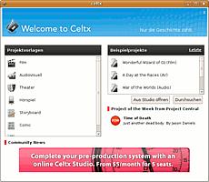
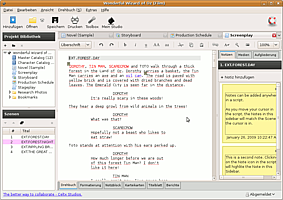

Celtx
Dieser Artikel wurde für die folgenden Ubuntu-Versionen getestet:
Ubuntu 14.04 Trusty Tahr
Zum Verständnis dieses Artikels sind folgende Seiten hilfreich:
Celtx  ist ein umfangreiches Programm zur Erstellung von Drehbüchern für Filme, Theateraufführungen oder Radiosendungen und hilft allgemein bei der Planung von Mediaproduktionen. Es stellt eine übersichtliche Oberfläche bereit und wurde auf der Basis von Programmen der Mozilla Foundation (siehe z.B. Firefox) erstellt. Das Programm an sich ist kostenlos, die Betreiber bieten aber kommerzielle Hosting-Lösungen, auf die das Programm zugeschnitten ist.
ist ein umfangreiches Programm zur Erstellung von Drehbüchern für Filme, Theateraufführungen oder Radiosendungen und hilft allgemein bei der Planung von Mediaproduktionen. Es stellt eine übersichtliche Oberfläche bereit und wurde auf der Basis von Programmen der Mozilla Foundation (siehe z.B. Firefox) erstellt. Das Programm an sich ist kostenlos, die Betreiber bieten aber kommerzielle Hosting-Lösungen, auf die das Programm zugeschnitten ist.
Mögliche Alternativen sind beispielsweise Trelby , das u.a. Celtx-Dateien (.celtx) importieren kann, KIT Scenarist , das es auch auf Deutsch gibt, Plume Creator oder oStoryBook .
Installation¶
 Celtx ist nicht in den offiziellen Paketquellen enthalten.
Manuell¶
Eine vorkompilierte Binärdatei mit deutscher Sprachunterstützung findet man über die Homepage von Celtx. Vorher ist eine Registrierung zwingend erforderlich. Dann den Punkt "Other languages and systems" unterhalb von "Herunterladen Celtx" auswählen und die passende Archivdatei (32-/64-Bit) herunterladen.
Anschließend entpackt [1] man das Archiv. Wenn nur ein Benutzer auf dem System vorhanden ist bzw. nur ein Benutzer auf dem System das Programm benutzen soll, reicht es, das Archiv in das jeweilige Homeverzeichnis zu entpacken. Sollen hingegen alle Benutzer des Systems Zugriff auf das Programm haben, sollte man das Archiv mit folgendem Befehl nach /usr/local/share (siehe Verzeichnisstruktur) entpacken:
cd /usr/local/share sudo tar xjf /home/BENUTZERNAME/Downloads/Celtx-2.x.y-de.tar.bz2
Dabei den Benutzernamen ersetzen und den Namen und den Pfad zur Archivdatei entsprechend anpassen.
Benutzung¶
Start¶
Die Anwendung ist über das Skript celtx im entsprechenden Ordner aufrufbar. Bei der ersten Installations-Variante über ein Fremdpaket also über "Anwendungen -> Unterhaltungsmedien -> Celtx" oder bei Verwendung der vorkompilierten Binärversion durch den Befehl:
/usr/local/share/celtx/celtx
Ist kein Eintrag im Menü vorhanden, so erstellt man sich einen Programmstarter [2], z.B. in der Kategorie "Multimedia" oder "Büro". Als Symbol kann das eingangs verwendete Bild dienen.
Nach dem ersten Programmaufruf werden im Homeverzeichnis die versteckten Ordner ~/.celtx und ~/.greyfirst erstellt, wobei der letztere das Profil des Benutzers mit Add-Ons usw. beinhaltet.

Oberfläche¶
Bei jedem Start von Celtx wird man von einem Dialog empfangen, bei dem man die Auswahl zwischen verschiedenen Arten von neuen Projekten hat oder eigene bzw. Beispiel-Projekte öffnen kann.
Anschließend befindet man sich im Hauptfenster, das von seinem Design (vor allem den Tabs) an Firefox erinnert, auf dem es ja auch basiert.
Problembehebung¶
Neu-/Deinstallation/Update¶
Um das Programm auf den "Auslieferungszustand" zurückzusetzen, sollte es reichen, die versteckten Ordner ~/.celtx und ~/.greyfirst aus dem Homeverzeichnis zu entfernen [3].
Um das Programm vollständig zu entfernen, entfernt man das erstellte Fremdpaket über die Paketverwaltung (selbst kompiliert) oder löscht den Celtx-Programmordner /usr/local/share/celtx mit Root-Rechten (bei manueller Installation).
Um eine neuere Version zu installieren, muss man ebenfalls den Programmordner löschen und die neue Version wie oben angegeben installieren.
Links¶
Celtx FAQ
- häufige Fragen und Antwortenkommerzielle Hosting-Möglichkeiten der Celtx-Entwickler
- kostenpflichtig
- Erstellt mit Inyoka
-
 2004 – 2017 ubuntuusers.de • Einige Rechte vorbehalten
2004 – 2017 ubuntuusers.de • Einige Rechte vorbehalten
Lizenz • Kontakt • Datenschutz • Impressum • Serverstatus -
Serverhousing gespendet von